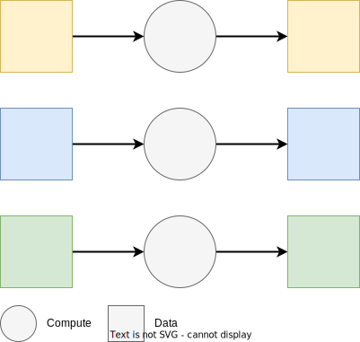

Batch training & tuning on Ray Tune
Contents
Batch training & tuning on Ray Tune#
Batch training and tuning are common tasks in simple machine learning use-cases such as time series forecasting. They require fitting of simple models on data batches corresponding to different locations, products, etc. Batch training can take less time to process all the data at once, but only if those batches can run in parallel!
This notebook showcases how to conduct batch regression with algorithms from XGBoost and Scikit-learn with Ray Tune. XGBoost is a popular open-source library used for regression and classification. Scikit-learn is a popular open-source library with a vast assortment of well-known ML algorithms.

For the data, we will use the NYC Taxi dataset. This popular tabular dataset contains historical taxi pickups by timestamp and location in NYC.
For the training, we will train separate regression models to predict trip_duration, with a different model for each dropoff location in NYC. Specifically, we will conduct an experiment for each dropoff_location_id, to find the best either XGBoost or Scikit-learn model, per location.
Contents#
In this this tutorial, you will learn how to:
Walkthrough#
Tip
Prerequisite for this notebook: Read the Key Concepts page for Ray Tune.
First, let’s make sure we have all Python packages we need installed.
!pip install -q "ray[tune]" scikit-learn
Next, let’s import a few required libraries, including open-source Ray itself!
import os
import pickle
from tempfile import TemporaryDirectory
print(f"Number of CPUs in this system: {os.cpu_count()}")
from typing import Tuple, List, Union, Optional, Callable
import time
import pandas as pd
import numpy as np
print(f"numpy: {np.__version__}")
import pyarrow
import pyarrow.parquet as pq
import pyarrow.dataset as pds
print(f"pyarrow: {pyarrow.__version__}")
Number of CPUs in this system: 8
numpy: 1.21.6
pyarrow: 10.0.0
import ray
if ray.is_initialized():
ray.shutdown()
ray.init()
print(ray.cluster_resources())
{'memory': 451212691046.0, 'object_store_memory': 175243542524.0, 'node:172.31.206.67': 1.0, 'CPU': 152.0, 'node:172.31.138.114': 1.0, 'node:172.31.221.253': 1.0, 'node:172.31.144.75': 1.0, 'node:172.31.169.100': 1.0, 'node:172.31.136.199': 1.0, 'node:172.31.251.87': 1.0, 'node:172.31.249.240': 1.0, 'node:172.31.252.125': 1.0, 'node:172.31.211.165': 1.0}
# import standard sklearn libraries
import sklearn
from sklearn.base import BaseEstimator
from sklearn.model_selection import train_test_split
from sklearn.linear_model import LinearRegression
from sklearn.tree import DecisionTreeRegressor
from sklearn.metrics import mean_absolute_error
print(f"sklearn: {sklearn.__version__}")
import xgboost as xgb
print(f"xgboost: {xgb.__version__}")
# import ray libraries
from ray import train, tune
from ray.train import Checkpoint
# set global random seed for sklearn models
np.random.seed(415)
sklearn: 1.2.0
xgboost: 1.3.3
/home/ray/anaconda3/lib/python3.8/site-packages/xgboost/compat.py:31: FutureWarning: pandas.Int64Index is deprecated and will be removed from pandas in a future version. Use pandas.Index with the appropriate dtype instead.
from pandas import MultiIndex, Int64Index
# For benchmarking purposes, we can print the times of various operations.
# In order to reduce clutter in the output, this is set to False by default.
PRINT_TIMES = False
def print_time(msg: str):
if PRINT_TIMES:
print(msg)
# To speed things up, we’ll only use a small subset of the full dataset consisting of two last months of 2019.
# You can choose to use the full dataset for 2018-2019 by setting the SMOKE_TEST variable to False.
SMOKE_TEST = True
Define how to load and prepare Parquet data #
First, we need to load some data. Since the NYC Taxi dataset is fairly large, we will filter files first into a PyArrow dataset. And then in the next cell after, we will filter the data on read into a PyArrow table and convert that to a pandas dataframe.
Tip
Use PyArrow dataset and table for reading or writing large parquet files, since its native multithreaded C++ adapter is faster than pandas read_parquet, even using engine=pyarrow.
# Define some global variables.
TARGET = "trip_duration"
s3_partitions = pds.dataset(
"s3://anonymous@air-example-data/ursa-labs-taxi-data/by_year/",
partitioning=["year", "month"],
)
s3_files = [f"s3://anonymous@{file}" for file in s3_partitions.files]
# Obtain all location IDs
all_location_ids = (
pq.read_table(s3_files[0], columns=["dropoff_location_id"])["dropoff_location_id"]
.unique()
.to_pylist()
)
# drop [264, 265]
all_location_ids.remove(264)
all_location_ids.remove(265)
# Use smoke testing or not.
starting_idx = -1 if SMOKE_TEST else 0
# TODO: drop location 199 to test error-handling before final git checkin
sample_locations = [141, 229, 173] if SMOKE_TEST else all_location_ids
# Display what data will be used.
s3_files = s3_files[starting_idx:]
print(f"NYC Taxi using {len(s3_files)} file(s)!")
print(f"s3_files: {s3_files}")
print(f"Locations: {sample_locations}")
NYC Taxi using 1 file(s)!
s3_files: ['s3://anonymous@air-example-data/ursa-labs-taxi-data/by_year/2019/06/data.parquet/ab5b9d2b8cc94be19346e260b543ec35_000000.parquet']
Locations: [141, 229, 173]
############
# STEP 1. Define Python functions to
# a) read and prepare a segment of data.
############
# Function to read a pyarrow.Table object using pyarrow parquet
def read_data(file: str, sample_id: np.int32) -> pd.DataFrame:
df = pq.read_table(
file,
filters=[
("passenger_count", ">", 0),
("trip_distance", ">", 0),
("fare_amount", ">", 0),
("pickup_location_id", "not in", [264, 265]),
("dropoff_location_id", "not in", [264, 265]),
("dropoff_location_id", "=", sample_id),
],
columns=[
"pickup_at",
"dropoff_at",
"pickup_location_id",
"dropoff_location_id",
"passenger_count",
"trip_distance",
"fare_amount",
],
).to_pandas()
return df
# Function to transform a pandas dataframe
def transform_df(input_df: pd.DataFrame) -> pd.DataFrame:
df = input_df.copy()
# calculate trip_duration
df["trip_duration"] = (df["dropoff_at"] - df["pickup_at"]).dt.seconds
# filter trip_durations > 1 minute and less than 24 hours
df = df[df["trip_duration"] > 60]
df = df[df["trip_duration"] < 24 * 60 * 60]
# keep only necessary columns
df = df[
["dropoff_location_id", "passenger_count", "trip_distance", "trip_duration"]
].copy()
df["dropoff_location_id"] = df["dropoff_location_id"].fillna(-1)
return df
Define a Trainable (callable) function #
Next, we define a trainable function, called train_model(), in order to train and evaluate a model on a data partition. This function will be called in parallel for every permutation in the Tune search space!
Inside this trainable function:
üìñ The input must include a
configargument.üìà Inside the function, the tuning metric (a model‚Äôs loss or error) must be calculated and reported using
ray.train.report().✔️ Optionally checkpoint (save) the model for fault tolerance and easy deployment later.
Tip
Ray Tune has two ways of defining a trainable, namely the Function API and the Class API. Both are valid ways of defining a trainable, but the Function API is generally recommended.
############
# STEP 1. Define Python functions to
# b) train and evaluate a model on a segment of data.
############
def train_model(config: dict) -> None:
algorithm = config["algorithm"]
sample_location_id = config["location"]
# Load data.
df_list = [read_data(f, sample_location_id) for f in s3_files]
df_raw = pd.concat(df_list, ignore_index=True)
# Transform data.
df = transform_df(df_raw)
# We need at least 10 rows to create a train / test split.
if df.shape[0] < 10:
print_time(f"Location {sample_location_id} has only {df.shape[0]} rows.")
train.report(dict(error=None))
return None
# Train/valid split.
train_df, valid_df = train_test_split(df, test_size=0.2, shuffle=True)
train_X = train_df[["passenger_count", "trip_distance"]]
train_y = train_df[TARGET]
valid_X = valid_df[["passenger_count", "trip_distance"]]
valid_y = valid_df[TARGET]
# Train model.
model = algorithm.fit(train_X, train_y)
pred_y = model.predict(valid_X)
# Evaluate.
error = sklearn.metrics.mean_absolute_error(valid_y, pred_y)
# Define a model checkpoint using Ray Train API.
state_dict = {"model": algorithm, "location_id": sample_location_id}
with TemporaryDirectory() as tmpdir:
with open(os.path.join(tmpdir, "ckpt.pkl"), 'wb') as file:
pickle.dump(state_dict, file)
checkpoint = Checkpoint.from_directory(tmpdir)
# Save checkpoint and report back metrics, using ray.train.report()
# The metrics you specify here will appear in Tune summary table.
# They will also be recorded in Tune results under `metrics`.
metrics = dict(error=error)
train.report(metrics, checkpoint=checkpoint)
Run batch training on Ray Tune #
Recall what we are doing, high level, is training several different models per pickup location. We are using Ray Tune so we can run all these trials in parallel on a Ray cluster. At the end, we will inspect the results of the experiment and deploy only the best model per pickup location.
Step 1. Define Python functions to read and prepare a segment of data and train and evaluate one or many models per segment of data. We already did this, above.
Step 2. Scaling: Below, we use the default resources config which is 1 CPU core for each task. For more information about configuring resource allocations, see A Guide To Parallelism and Resources.
Step 3. Search Space: Below, we define our Tune search space, which consists of:
Different algorithms:
XGBoost
Scikit-learn LinearRegression
Some or all NYC taxi drop-off locations.
Step 4. Search Algorithm or Strategy: Below, our Tune jobs will be defined using a search space and simple grid search.
The typical use case for Tune search spaces is for hyperparameter tuning. In our case, we are defining the Tune search space in order to run distributed tuning jobs automatically. Each training job will use a different data partition (taxi pickup location), different algorithm, and the compute resources we defined in the Scaling config.
Step 5. Now we are ready to kick off a Ray Tune experiment!
Define a
tunerobject.Put the training function
train_model()inside thetunerobject.Run the experiment using
tuner.fit().
üí° After you run the cell below, right-click on it and choose ‚ÄúEnable Scrolling for Outputs‚Äù! This will make it easier to view, since tuning output can be very long!
Setting SMOKE_TEST=False, running on Anyscale: 518 models, using 18 NYC Taxi S3 files dating from 2018/01 to 2019/06 (split into partitions approx 1GiB each), simultaneously trained on a 10-node AWS cluster of m5.4xlarges. Total data reading and train time was 37 minutes.
############
# STEP 2. Customize distributed compute scaling.
############
# Use Ray Tune default resources config which is 1 CPU core for each task.
############
# STEP 3. Define a search space dict of all config parameters.
############
search_space = {
"algorithm": tune.grid_search(
[LinearRegression(fit_intercept=True), xgb.XGBRegressor(max_depth=4)]
),
"location": tune.grid_search(sample_locations),
}
# Optional STEP 4. Specify the hyperparameter tuning search strategy.
############
# STEP 5. Run the experiment with Ray Tune APIs.
# https://docs.ray.io/en/latest/tune/examples/tune-pytorch-lightning.html
############
start = time.time()
# Define a tuner object.
tuner = tune.Tuner(
train_model,
param_space=search_space,
run_config=train.RunConfig(
# redirect logs to relative path instead of default ~/ray_results/
name="batch_tuning",
),
)
# Fit the tuner object.
results = tuner.fit()
total_time_taken = time.time() - start
print(f"Total number of models: {len(results)}")
print(f"TOTAL TIME TAKEN: {total_time_taken/60:.2f} minutes")
# Total number of models: 6
# TOTAL TIME TAKEN: 0.37 minutes
Tune Status
| Current time: | 2023-01-10 16:26:11 |
| Running for: | 00:00:20.45 |
| Memory: | 3.0/30.9 GiB |
System Info
Using FIFO scheduling algorithm.Resources requested: 0/152 CPUs, 0/0 GPUs, 0.0/420.22 GiB heap, 0.0/163.21 GiB objects
Trial Status
| Trial name | status | loc | algorithm | location | iter | total time (s) | error |
|---|---|---|---|---|---|---|---|
| train_model_7fd9c_00000 | TERMINATED | 172.31.211.165:3629 | LinearRegression() | 141 | 1 | 1.90341 | 500.005 |
| train_model_7fd9c_00001 | TERMINATED | 172.31.252.125:17717 | XGBRegressor(ba_9dc0 | 141 | 1 | 2.41094 | 523.611 |
| train_model_7fd9c_00002 | TERMINATED | 172.31.251.87:4579 | LinearRegression() | 229 | 1 | 1.86279 | 568.826 |
| train_model_7fd9c_00003 | TERMINATED | 172.31.138.114:11079 | XGBRegressor(ba_0040 | 229 | 1 | 2.53176 | 583.261 |
| train_model_7fd9c_00004 | TERMINATED | 172.31.221.253:3999 | LinearRegression() | 173 | 1 | 1.8416 | 950.346 |
| train_model_7fd9c_00005 | TERMINATED | 172.31.136.199:12355 | XGBRegressor(ba_0160 | 173 | 1 | 2.02936 | 2046.04 |
Trial Progress
| Trial name | error | should_checkpoint |
|---|---|---|
| train_model_7fd9c_00000 | 500.005 | True |
| train_model_7fd9c_00001 | 523.611 | True |
| train_model_7fd9c_00002 | 568.826 | True |
| train_model_7fd9c_00003 | 583.261 | True |
| train_model_7fd9c_00004 | 950.346 | True |
| train_model_7fd9c_00005 | 2046.04 | True |
2023-01-10 16:26:11,740 INFO tune.py:762 -- Total run time: 22.07 seconds (20.27 seconds for the tuning loop).
Total number of models: 6
TOTAL TIME TAKEN: 0.37 minutes
After the Tune experiment has finished, select the best model per dropoff location.
We can assemble the Tune results into a pandas dataframe, then sort by minimum error, to select the best model per dropoff location.
# get a list of training loss errors
errors = [i.metrics.get("error", 10000.0) for i in results]
# get a list of checkpoints
checkpoints = [i.checkpoint for i in results]
# get a list of locations
locations = [i.config["location"] for i in results]
# get a list of model params
algorithms = [i.config["algorithm"] for i in results]
# Assemble a pandas dataframe from Tune results
results_df = pd.DataFrame(
zip(locations, errors, algorithms, checkpoints),
columns=["location_id", "error", "algorithm", "checkpoint"],
)
results_df.head(8)
| location_id | error | algorithm | checkpoint | |
|---|---|---|---|---|
| 0 | 141 | 500.005318 | LinearRegression() | Checkpoint(local_path=/home/ray/christy-air/fo... |
| 1 | 141 | 523.610705 | XGBRegressor(base_score=0.5, booster='gbtree',... | Checkpoint(local_path=/home/ray/christy-air/fo... |
| 2 | 229 | 568.826123 | LinearRegression() | Checkpoint(local_path=/home/ray/christy-air/fo... |
| 3 | 229 | 583.261077 | XGBRegressor(base_score=0.5, booster='gbtree',... | Checkpoint(local_path=/home/ray/christy-air/fo... |
| 4 | 173 | 950.345817 | LinearRegression() | Checkpoint(local_path=/home/ray/christy-air/fo... |
| 5 | 173 | 2046.043927 | XGBRegressor(base_score=0.5, booster='gbtree',... | Checkpoint(local_path=/home/ray/christy-air/fo... |
# Keep only 1 model per location_id with minimum error
final_df = results_df.copy()
final_df = final_df.loc[(final_df.error > 0), :]
final_df = final_df.loc[final_df.groupby("location_id")["error"].idxmin()]
final_df.sort_values(by=["error"], inplace=True)
final_df.set_index("location_id", inplace=True, drop=True)
final_df
| error | algorithm | checkpoint | |
|---|---|---|---|
| location_id | |||
| 141 | 500.005318 | LinearRegression() | Checkpoint(local_path=/home/ray/christy-air/fo... |
| 229 | 568.826123 | LinearRegression() | Checkpoint(local_path=/home/ray/christy-air/fo... |
| 173 | 950.345817 | LinearRegression() | Checkpoint(local_path=/home/ray/christy-air/fo... |
final_df[["algorithm"]].astype("str").value_counts(normalize=True)
# 0.67 XGB
# 0.33 Linear Regression
algorithm
LinearRegression() 1.0
dtype: float64
Load a model from checkpoint and perform batch prediction #
Tip
Ray Predictors make batch inference easy since they have internal logic to parallelize the inference.
Finally, we will restore the best and worst models from checkpoint and make predictions.
We will easily obtain Checkpoint objects from the Tune results.
We will restore a regression model directly from checkpoint, and demonstrate it can be used for prediction.
# Choose a dropoff location
sample_location_id = final_df.index[0]
sample_location_id
141
# Get the algorithm used
sample_algorithm = final_df.loc[[sample_location_id]].algorithm.values[0]
print(f"algorithm type:: {type(sample_algorithm)}")
# Get a checkpoint directly from the pandas dataframe of Tune results
checkpoint = final_df.checkpoint[sample_location_id]
print(f"checkpoint type:: {type(checkpoint)}")
# Restore a model from checkpoint
with checkpoint.as_directory() as tmpdir:
with open(os.path.join(tmpdir, "ckpt.pkl"), "rb") as fin:
state_dict = pickle.load(fin)
sample_model = state_dict["model"]
algorithm type:: <class 'sklearn.linear_model._base.LinearRegression'>
checkpoint type:: <class 'ray.air.checkpoint.Checkpoint'>
# Create some test data
df_list = [read_data(f, sample_location_id) for f in s3_files[:1]]
df_raw = pd.concat(df_list, ignore_index=True)
df = transform_df(df_raw)
_, test_df = train_test_split(df, test_size=0.2, shuffle=True)
test_X = test_df[["passenger_count", "trip_distance"]]
test_y = np.array(test_df.trip_duration) # actual values
# Perform batch prediction using restored model from checkpoint
pred_y = sample_model.predict(test_X)
# Zip together predictions and actuals to visualize
pd.DataFrame(zip(pred_y, test_y), columns=["pred_y", TARGET])[0:10]
| pred_y | trip_duration | |
|---|---|---|
| 0 | 1153.574219 | 1174 |
| 1 | 870.131592 | 299 |
| 2 | 1065.683105 | 1206 |
| 3 | 591.070801 | 566 |
| 4 | 766.853149 | 630 |
| 5 | 1037.557861 | 852 |
| 6 | 1540.295410 | 1596 |
| 7 | 827.835510 | 801 |
| 8 | 1871.982422 | 1363 |
| 9 | 960.105408 | 715 |
Compare validation and test error.
During model training we reported error on “validation” data (random sample). Below, we will report error on a pretend “test” data set (a different random sample).
Do a quick validation that both errors are reasonably close together.
# Evaluate restored model on test data.
error = sklearn.metrics.mean_absolute_error(test_y, pred_y)
print(f"Test error: {error}")
Test error: 513.4911755733472
# Compare test error with training validation error
print(f"Validation error: {final_df.error[sample_location_id]}")
# Validation and test errors should be reasonably close together.
Validation error: 500.0053176600036